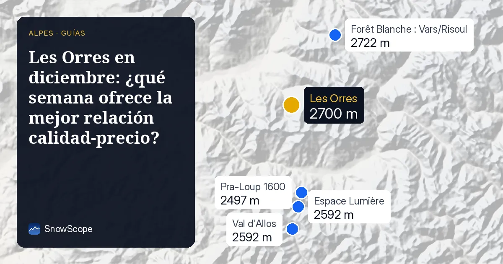

Les Orres en diciembre: ¿qué semana ofrece la mejor relación calidad-precio?
Si quieres esquiar en Les Orres en diciembre de 2026 sin pagar las tarifas de temporada alta antes de que la nieve sea fiable en la base, necesitas hacer coincidir el calendario de precios con nuestro historial de nieve. La semana adecuada combina un precio más bajo y buenas probabilidades de nieve.
Consulta la previsión de nieve en tiempo real de Les Orres en la app SnowScopeEspesor de nieve, alertas de nieve polvo y mapa 3D, gratis.
Cómo cambia el precio durante diciembre
El sitio oficial muestra que los precios del pase de adulto de 1 día cambian a medida que avanza el mes. Del 5 al 11 de diciembre de 2026, el precio de temporada baja es de 34 EUR. Pasando a la temporada media del 12 al 18 de diciembre de 2026, el precio sube a 38,50 EUR. Una vez que llegas a la temporada alta a partir del 19 de diciembre de 2026, el pase de adulto de 1 día cuesta 45,50 EUR.
Estos cambios de precio graduales te permiten elegir el momento adecuado para tu visita. Pagas menos a principios de mes, pero debes comprobar si el espesor de la nieve cumple tus expectativas antes de reservar.

Nieve de diciembre a tres alturas
Nuestro historial de nieve de 46 inviernos pasados muestra diferencias claras entre la base, la media montaña y la cima de los remontes. En la base de los remontes a 1554 m, el espesor habitual en diciembre es de 23 cm, y el espesor habitual el 15 de diciembre es de 22 cm. Un diciembre escaso trae 3 cm o menos en 1 de cada 10 inviernos, mientras que un diciembre profundo trae 53 cm o más. En la media montaña a 2127 m, el espesor habitual en diciembre es de 57 cm, con 50 cm habituales el 15 de diciembre, y el rango entre escaso y profundo va de 19 cm a 112 cm. En la cima de los remontes a 2700 m, el espesor habitual en diciembre alcanza los 97 cm, con 94 cm habituales el 15 de diciembre, oscilando entre 41 cm en un diciembre escaso y 200 cm en un diciembre profundo.
La base puede permanecer escasa al principio. La proporción de inviernos con 30 cm o más en la base es solo del 15 % del 1 al 7 de diciembre, subiendo al 26 % del 8 al 14 de diciembre, al 41 % del 15 al 21 de diciembre y al 52 % del 22 al 28 de diciembre. En la media montaña, la proporción de inviernos con 30 cm o más ya es del 61 % del 1 al 7 de diciembre, del 78 % del 8 al 14 de diciembre, y alcanza el 87 % del 15 al 21 de diciembre y el 89 % del 22 al 28 de diciembre. En la cima, la proporción se sitúa en el 87 % del 1 al 7 de diciembre y sube al 96 % del 15 al 28 de diciembre.
En este momento, las cifras de nieve para el 13 de noviembre de 2026 muestran 0 cm en la base de los remontes con 2 cm de nieve nueva esperados en los próximos 7 días. La media montaña tiene 1 cm con 29 cm de nieve nueva esperados, y la cima tiene 10 cm con 40 cm de nieve nueva esperados. Las perspectivas de nieve nueva para dos semanas del 13 de noviembre de 2026 al 26 de noviembre de 2026 para la media montaña y superior indican una media de 67 cm dentro de un rango de 55 a 80 cm.
La semana en la que el precio y la nieve coinciden
Si pones los dos calendarios uno al lado del otro, la mejor semana es la de temporada media, del 12 al 18 de diciembre de 2026. El forfait de adulto de 1 día cuesta entonces 38,50 EUR, frente a 45,50 EUR desde el 19 de diciembre, y las probabilidades de nieve son mucho mejores que en los primeros días.
A media montaña había 30 cm o más en el 78 % de los inviernos pasados del 8 al 14 de diciembre y en el 87 % del 15 al 21 de diciembre; en la cima era el 96 % en la segunda mitad del mes. Así esquías la parte alta sobre buena nieve y sigues pagando la tarifa de temporada media, antes de los precios de Navidad.
Frente a Vars-Risoul
Ayuda comparar Les Orres con la cercana Vars-Risoul para ver cómo se comparan los números. Vars-Risoul ofrece una zona de esquí cartografiada más grande con 131 km de pistas y 38 remontes, en comparación con la zona de esquí de Les Orres con 54 km de pistas y 21 remontes. El desnivel es similar, con Vars-Risoul abarcando desde 1632 m a 2722 m, y Les Orres abarcando desde 1554 m a 2700 m.
En términos de nieve, Vars-Risoul muestra un espesor habitual en diciembre de 33 cm en la base (1632 m), 51 cm en la media montaña (2177 m) y 77 cm en la cima (2722 m). Su espesor habitual el 15 de diciembre es de 32 cm en la base, 48 cm en la media montaña y 76 cm en la cima. En cuanto a precios, Vars-Risoul lista un pase de adulto de 1 día Forêt Blanche para el invierno 2026-27 a 58 EUR, y un pase de adulto de 6 días a 298 EUR. Les Orres te da pasos diarios más flexibles empezando en 34 EUR en temporada baja, lo que la convierte en una opción de menor coste si apuntas a las semanas correctas.
Qué cambió desde los años 1980
Mirando hacia atrás a través de nuestros 46 inviernos pasados, los promedios de diciembre muestran un cambio positivo en el espesor de la nieve en las elevaciones más altas. Si comparamos los primeros 15 inviernos (1980-81 a 1994-95) con los últimos 15 inviernos (2011-12 a 2025-26), los números cuentan una historia interesante. En la media montaña, el promedio de diciembre fue de 44 cm en los primeros 15 inviernos, y subió a 58 cm en los últimos 15 inviernos. En la cima de los remontes, el promedio de diciembre fue de 76 cm en los primeros 15 inviernos, y aumentó a 101 cm en los últimos 15 inviernos.
En la base de los remontes, el promedio de diciembre se movió de 21 cm en los primeros 15 inviernos a 24 cm en los últimos 15 inviernos. El diciembre más escaso registrado en la media montaña fue de 2 cm en la temporada 2015-16, mientras que el diciembre más profundo en la media montaña alcanzó los 128 cm en la temporada 1996-97. El invierno pasado, la temporada 2025-26 trajo un promedio de diciembre de 19 cm en la base, 42 cm en la media montaña y 72 cm en la cima.
Consejos para esquiadores
- Reserva tu pase de esquí en el sitio oficial para la semana del 12 al 18 de diciembre de 2026 para asegurar la tarifa de temporada media de 38,50 EUR antes de que comiencen los precios de temporada alta el 19 de diciembre.
- Concentra tu esquí en la media montaña (2127 m) y la cima (2700 m) en diciembre, donde la proporción de inviernos con 30 cm o más es del 87 % al 96 % durante mediados de mes.
- Comprueba el boletín local de aludes antes de ir fuera de pista, especialmente cuando los totales de nieve nueva de las perspectivas añaden profundidad a las elevaciones superiores.
- Espera una cobertura fina en la base (1554 m) a principios de mes, donde el espesor habitual de diciembre es solo de 23 cm y la proporción de inviernos con 30 cm o más es solo del 15 % del 1 al 7 de diciembre.
Más mapas (sitios externos)
Referencias y créditos
- Les Orres, official ski pass prices 2026-27 www.lesorres.com/forfaits-de-ski
- Risoul, official ski pass page, Forêt Blanche 2026-27 risoul.labellemontagne.com/fr/hiver/forfaits/risoul-foret-blanche/
- Risoul, official 6-day Forêt Blanche pass page 2026-27 risoul.labellemontagne.com/fr/hiver/forfaits/6-jours-foret-blanche/
- SnowScope, December snow at three heights and today's snow map snowscope.app/
Sobre estas cifras
Cifras de nieve: histórico de nieve de SnowScope, 46 inviernos pasados (1980-81 a 2025-26) a tres alturas de cada estación (un modelo del pasado corregido por altitud: una estimación para una zona, no mediciones de la estación); cifras de diciembre calculadas con los espesores diarios de esos inviernos. Nieve actual y tendencia a dos semanas: previsiones de SnowScope (tendencia de ECMWF y GFS, un rango, no una promesa). Remontes y pistas: cartografía de OpenSkiMap. Precios: las páginas oficiales de abajo, consultadas el 2026-11-13; los precios pueden cambiar, compruébalos antes de reservar.
Boletines oficiales de aludes: Météo-France – Bulletin d'estimation du risque d'avalanche
Citar este informe
Para investigación, docencia o prensa: cifras y gráficos reutilizables libremente bajo CC BY 4.0 con esta cita.
SnowScope (2026), Les Orres en diciembre: ¿qué semana ofrece la mejor relación calidad-precio?, https://snowscope.app/blog/es/2026/11/les-orres-december-ski-week-by-week-prices-2026.html, consultado el 2026-11-14
SnowScope (Atlas Labs). (2026, November 14). Les Orres en diciembre: ¿qué semana ofrece la mejor relación calidad-precio?. SnowScope snow reports. https://snowscope.app/blog/es/2026/11/les-orres-december-ski-week-by-week-prices-2026.html
BibTeX
@misc{snowscope2026lesorresdecemberskiweekb,
author = {{SnowScope (Atlas Labs)}},
title = {Les Orres en diciembre: ¿qué semana ofrece la mejor relación calidad-precio?},
year = {2026},
month = nov,
howpublished = {\url{https://snowscope.app/blog/es/2026/11/les-orres-december-ski-week-by-week-prices-2026.html}},
note = {Published 2026-11-14 15:51 UTC; accessed 2026-11-14}
}· CC BY 4.0 · Métodos, datos y herramientas →
Les Orres: nieve y temperatura según la altura, este invierno vs el pasado (herramientas) →
Sigue Les Orres
Gratis: un aviso cuando llega la nieve y la previsión cada mañana.
Más partes de nieve

Un plan barato de 3 días en el lago de Como en diciembre con precios reales 2026-27: trenes, barcos, funicular y esquí en Piani di Bobbio o Madesimo, lo que ahorras frente a Cortina y la probabilidad de nieve en Navidad.

En diciembre, la nieve depende sobre todo de la altura. 46 inviernos pasados en 676 estaciones de los Alpes muestran cuánta nieve esperar el 1, el 15 y el 22 de diciembre, desde menos de 1200 m hasta más de 2400 m.